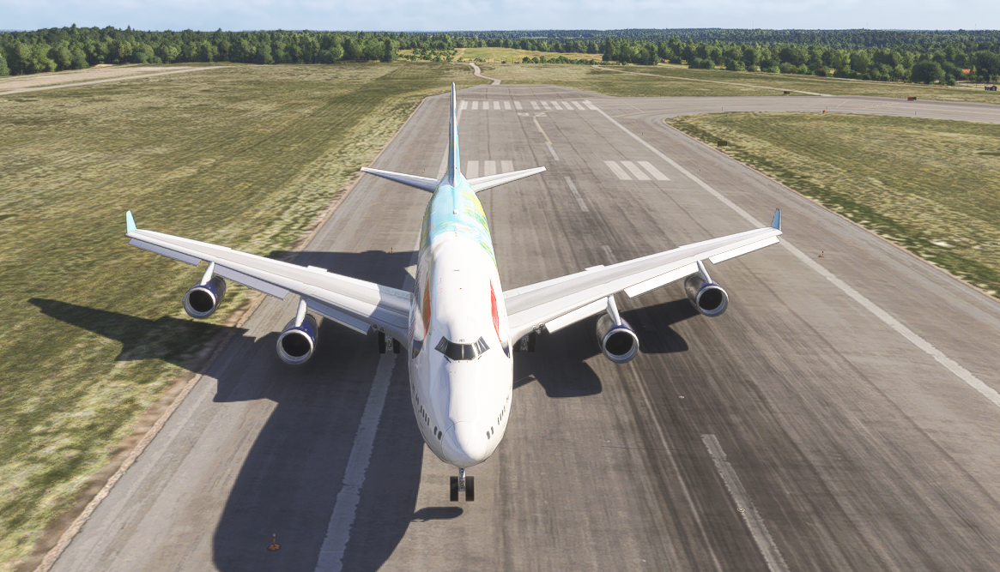
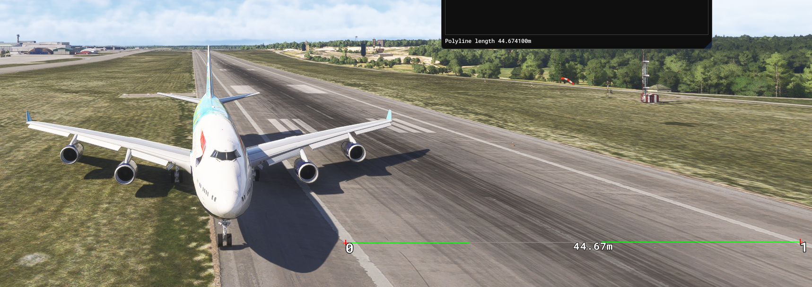
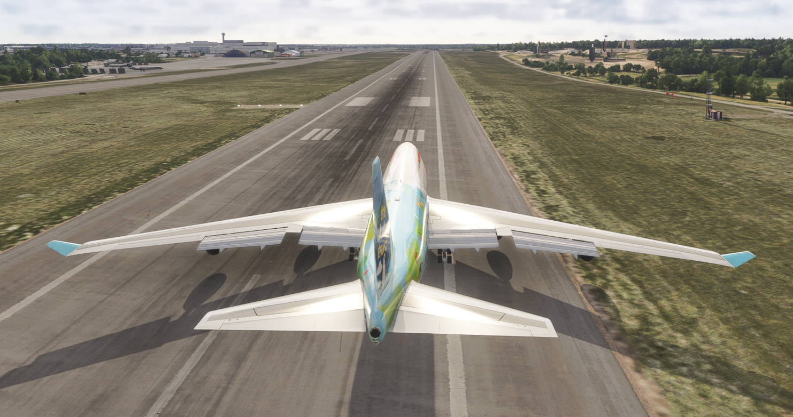
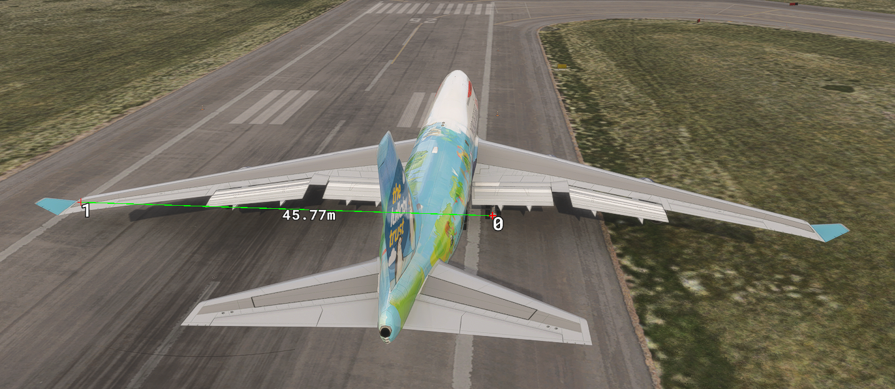

PENGUIN ACCIDENT INVESTIGATION BOARD
PENGUIN’S DEMOCRATIC REPUBLIC OF PATAGONIA • OFFICE OF FLIGHT OPERATIONS RESEARCH
Ground Taxi Turn Radius Performance Investigation
Boeing 747-400 — Nosewheel Steering, Body Gear Assist, and Load-Sensitivity Review
DISTRIBUTION: UNRESTRICTED — PUBLIC RELEASE
“In Claude Confidimus”
Executive Summary
This investigation was opened in response to reports on the PSX user forum of an excessively wide
ground taxi turn radius on the Boeing 747-400 model, including one poster’s specific
characterisation that the behaviour was “like the body gear is not steering.” The Board
conducted a structured series of controlled taxi trials directly against the simulation host, varying
aircraft gross weight, tiller deflection, groundspeed, and a candidate confounding parameter
(Qi275/“TowTurnRadius”); repeated the full trial series on an MSFS-linked
visual configuration; based on the second poster’s own hypothesis, directly disabled body gear
steering to test it; and independently verified the documented minimum-radius turn technique with a
direct visual measurement of a single landing gear’s ground track.
The Board’s two principal findings both point to the same underlying system. First, disabling
body gear steering reproduces a large, repeatable increase in turn radius (24–40%) that closely
matches the forum poster’s description. Second, and more significant, a direct visual
measurement using the exact documented technique with body gear steering confirmed operative
found the outer main (wing) gear — a gear the manufacturer’s own data shows is unaffected
by body gear steering either way — tracking a 64% larger radius than published. With body gear
steering operative, the simulated turn radius otherwise closely tracks published real-world reference
data across most conditions tested, including a genuine transition above approximately 18 knots
groundspeed where body gear steering deactivates automatically and the radius opens up substantially
— a behaviour consistent with known real-aircraft nosewheel and body-gear-steering limits, not a
simulation defect in itself.
KEY FINDING
A direct visual measurement of the outer main gear’s ground track, using the exact documented
minimum-radius turn technique with body gear steering confirmed operative, found a turn radius of
30.5 m against a published figure of 18.6 m for that same gear — a 64% discrepancy
that exists independently of body gear steering state, since that specific gear is not steered by
the body gear system at all. Separately, disabling body gear steering (AC + DC BODY GR STRNG ARM
circuit breakers pulled) increased turn radius by 24–40% depending on tiller deflection,
weight-independently, matching the manufacturer’s own documented effect in direction but at
four to five times the published magnitude. See Sections 3.6 and 3.7.
STATUS UPDATE — 15 AUGUST 2026
Following publication, the simulator’s developer released update 10.190 addressing this
investigation’s findings. Independent re-verification confirms the fix: the outer main gear
now completes the documented 180° turn within 45.77–47 m, an essentially direct match
for the manufacturer’s own published 46.3 m minimum-runway-width figure, versus 61.0 m
before the fix. The Board considers this investigation’s findings resolved. See Section 7.
Scope of Trials
- Gross weight: 200,000 kg and 380,000 kg
- Tiller deflection: 50% and 100% of full travel
- Groundspeed: 1–20 kt, including a dedicated low-speed regime (2–3 kt) and a
dedicated high-speed sweep through 20 kt
- Host configuration: bare simulation host (no visual add-on), and a full configuration with
MSFS-linked external visuals
- Candidate confound:
Qi275 (“TowTurnRadius”) at 60, 216 (default), and 800
- Body gear steering: operative (normal) versus directly disabled via circuit breaker
- Independent visual verification: manually-flown documented technique, single-gear ground
track measured directly from recorded imagery (ESSA runway 26)
1 Background
A type-rated pilot posting on the PSX user forum reported that, despite following the documented
minimum-radius turn technique and using full tiller input, the ground steering radius seemed too
wide to complete a 180° turn on a 60 m runway. The simulator’s developer requested
quantified data and asked specifically whether an external scenery interface (MSFS, X-Plane, etc.)
was in use, noting that such interfaces are not always faithful to PSX’s own internal dynamics
and that, using PSX’s own instruments and simplified scenery at full tiller and a sufficiently
low groundspeed, the turn radius should be correct and realistic; at excessive speed, audible
nose gear scrubbing should instead be the noticeable symptom. A second, independent poster then
corroborated the original report, describing an inability to complete a turnaround within a runway
turnaround pad, and offered a specific characterisation: “It’s like the body gear is
not steering.” The developer, unable to reproduce a wide radius (measuring 25 m at
5 kt) and noting no relevant change in the simulator since 2008, asked again whether an
external scenery interface add-on might be responsible.
In the absence of a resolution in that thread, the Board elected to construct an instrumented,
repeatable test harness capable of directly commanding the simulation host and measuring the
resulting ground track with high precision, rather than relying on subjective in-cockpit or
external-view impressions, and to specifically test the second poster’s body-gear-steering
hypothesis alongside the more general weight/speed/visual-configuration variables.
2 Methodology
A dedicated test harness was built to connect directly to the simulation host over its native network
protocol. The harness performs the following, for each trial:
- Weight configuration — gross weight is set via direct zero-fuel-weight and per-tank
fuel writes, applied in small incremental steps to avoid triggering the host’s simulated
truck-speed refuelling behaviour, with automatic compensation for any fuel-tank capacity
shortfall so that the commanded gross weight is always achieved exactly.
- Brake release — parking brake released via the documented full-brake /
release sequence.
- Motion & steering — tiller set to the target deflection; engine power applied only
as needed to achieve breakaway, then reduced to idle (or held, for high-speed trials).
- Speed management — for low-speed trials, a real-pilot braking technique is used:
brakes are pulsed at approximately 50% only when speed exceeds the upper threshold for the
trial band, released well before the aircraft stops, and never held continuously (avoiding
unrealistic continuous brake heating). High-speed trials instead hold engine power constant
and allow speed to build freely through the range of interest.
- Data logging — aircraft position and heading are logged continuously at high rate
throughout the manoeuvre.
- Analysis — instantaneous turn radius is computed at every logged sample from the
kinematic relation r = v / ω (groundspeed over turn rate), rather than fitting a
single circle to the track. This yields a full radius-versus-speed curve from a single
continuous manoeuvre. Reported values are the per-speed-band median, which is robust to rare
transient artefacts at brake-pulse transitions.
Validation: the harness’s 25.10 m result at 5 kt / 100% tiller was cross-checked against
an independent measurement reported by a PSX developer (25 m at 5 kt) and found to be in
close agreement. An additional unsourced figure (23.15 m) circulating informally among the
reporting community was consistent with this result but could not be traced to a verifiable primary
source and is not relied upon in this report’s conclusions (see References).
3 Findings
3.1 Low-Speed Matrix (Real-Pilot Braking Technique)
Representative results at 5 kt groundspeed, host: bare simulation server. Full-configuration
(MSFS-linked visuals) trials reproduced these results to within measurement precision (Section 3.4).
| Gross Weight | Tiller | Radius | Turn Rate |
|---|
| 200,000 kg | 100% | 25.10 m (82.4 ft) | 5.87°/s |
| 200,000 kg | 50% | 53.27 m (174.8 ft) | 2.77°/s |
| 380,000 kg | 100% | 25.09 m (82.3 ft) | 5.87°/s |
| 380,000 kg | 50% | 53.24 m (174.7 ft) | 2.77°/s |
3.2 Dedicated Low-Speed Trial (2–3 kt)
Following a specific request to characterise the very low end of the speed range typically used
during a sharp, max-deflection turn, an additional trial constrained groundspeed to a 1.5–3.0 kt
brake-pulse band at 200,000 kg / 100% tiller.
| Groundspeed | Radius | Turn Rate |
|---|
| 1 kt | 25.19 m (82.6 ft) | 1.17°/s |
| 2 kt | 25.14 m (82.5 ft) | 2.34°/s |
| 3 kt | 25.11 m (82.4 ft) | 3.51°/s |
No departure from the flat, geometry-governed radius was observed at this reduced speed.
3.3 High-Speed Sweep (0–20 kt, Continuous Power)
To characterise the upper end of the taxi speed range, four trials held constant engine power and
allowed groundspeed to build freely through a full 360° turn. All four conditions show an
essentially flat radius up to approximately 17–18 kt, followed by a sharp, repeatable increase.
| Condition | ≤17 kt (flat) | 18 kt | 19–20 kt |
|---|
| 200,000 kg / 100% tiller | 25.1–25.2 m | 25.1 m | 27.8–31.3 m |
| 380,000 kg / 100% tiller | 25.1–25.8 m | 27.2 m | 31.2 m |
| 200,000 kg / 50% tiller | 53.2–53.5 m | 53.7 m | 74.7 m |
| 380,000 kg / 50% tiller | 53.3–53.6 m | 54.1 m | 74.7 m |
| Turn rate at transition (100% tiller, ~18–20kt): 18.4–21.1°/s | (50% tiller, ~18–20kt): 7.5–9.8°/s |
The onset of this transition (approximately 18 kt) coincides closely with two documented
real-aircraft effects operating in the same narrow speed band: reported degradation of nosewheel
steering effectiveness at high tiller angles above roughly 18 kt, and automatic deactivation of
the body gear steering system (which pivots the inner body gear up to 13° opposite the nosewheel
to tighten the turn) above 20 kt, re-arming below 15 kt. The Board considers it likely that
both effects contribute to the observed transition; it was not possible to fully separate their
individual contributions with the present instrumentation.
3.4 Effect of Gross Weight, Visual Configuration, and TowTurnRadius
| Variable Tested | Range | Effect on Turn Radius |
|---|
| Gross weight | 200,000 kg – 380,000 kg | None detected. Results match within measurement noise at every speed and tiller condition, including through the high-speed transition. |
| MSFS-linked visual configuration | Bare host vs. full MSFS-linked configuration | None detected. Full low-speed matrix reproduced to within measurement precision on both configurations. |
Qi275 (“TowTurnRadius”) | 60, 216 (default), 800 | None detected. Identical radius (25.10 m @ 5 kt) at all three settings. |
3.5 Comparison Against Manufacturer-Published Clearance Radii
The manufacturer publishes clearance radii for the Model 747-400 as a function of the distance
between the airplane centerline and the turn center, with and without body gear steering. The
tightest tabulated condition, with body gear steering operative, is reproduced below alongside this
investigation’s own measurement.
| Reference Point | Published Radius | This Investigation |
|---|
| Main / body gear (outside tire) | 18.6 m (61 ft) | 25.10 m
(100% tiller, 5 kt, both weights) |
| Nose gear (outside tire) | 27.7 m (91 ft) |
| Wing tip (outside) | 48.5 m |
| Minimum pavement width, 180° turn (“Z”) | 46.3 m |
Source: manufacturer Airplane Characteristics for Airport Planning document, Section 4.3.1,
tightest tabulated row (X = 40 ft). “Z” (minimum pavement width) carries the same
“measured to outside tire faces” footnote as the nose and main gear columns, i.e. it is a
gear-based figure, not a wingtip-based one: reconstructing the published geometry shows Z is set by
the nose gear’s wider swing (it has a larger radius than the main gear) relative to the
main gear’s position at the start of the documented technique, not by the wingtip. This document
does not identify which physical point on the airframe the simulator’s own reported position
track corresponds to; the measured value falling between the published main-gear and nose-gear radii
is consistent with, but does not prove, a reference point somewhere between those two locations along
the fuselage.
3.6 Effect of Body Gear Steering (Directly Disabled)
Following the second forum poster’s specific hypothesis (Section 1), the Board directly
disabled body gear steering by pulling both the AC and DC BODY GR STRNG ARM circuit
breakers on the overhead panel, then repeated selected trials unchanged in every other respect
(same weight-setting, brake-release, and real-pilot braking technique as Section 3.1). This
isolates body gear steering specifically: the breakers remove electrical arming/control power for
the body gear steering system without affecting the primary hydraulically-powered nose wheel
tiller steering, which remained fully functional throughout.
| Condition | BGS Operative (Section 3.1) | BGS Disabled | Increase |
|---|
| 200,000 kg / 100% tiller | 25.10 m | 31.27 m | +24.6% |
| 380,000 kg / 100% tiller | 25.09 m | 31.24 m | +24.5% |
| 200,000 kg / 50% tiller | 53.27 m | 74.74 m | +40.3% |
This effect is large, highly repeatable, weight-independent (matching the pattern established
throughout this investigation), and consistent in direction with the manufacturer’s own
published data (Section 3.5), which also shows a larger radius with body gear steering
inoperative. However, the magnitude of the effect measured here is substantially larger than
the manufacturer’s published figures suggest: at the same tightest tabulated condition, the
manufacturer’s data shows only a 96 ft → 91 ft (29.3 m
→ 27.7 m, ≈5.5%) change in nose gear radius between body gear steering
inoperative and operative — roughly four to five times smaller, proportionally, than the
24–40% increase measured here. The Board also notes that the 200,000 kg / 50% tiller,
BGS-disabled result (74.74 m) closely matches the radius this investigation separately measured
at 19–20 kt in the high-speed sweep (Section 3.3, 74.70 m), where body gear steering
deactivates automatically due to speed rather than being electrically disabled — two
independent methods of removing body gear steering converge on the same result, which the Board
considers strong corroborating evidence that the effect measured is genuinely attributable to the
absence of body gear steering, and not an artefact of the disabling method used.
3.7 Independent Visual Verification: Documented Technique at ESSA RW26
To verify the preceding findings independently of the Board’s own instrumented harness, the
pilot-community member supporting this investigation flew the documented minimum-radius 180°
turn technique exactly as specified (Ref. 3: full stop near the runway edge, full tiller, brakes
released, asymmetric/outboard-engine thrust, light intermittent braking on the inside main gear,
target groundspeed ≈5 kt) at Stockholm Arlanda (ESSA), runway 26, with body gear steering
confirmed operative throughout. The starting position placed the right outer main gear exactly on
the runway edge line (Figure 1). After completing a full 180° turn to the left, the right outer
main gear was measured, using the external visual system’s built-in ruler tool, to have come to
rest not merely outside the runway edge but on the grass beyond it (Figure 2).

Figure 1. Start: right outer main
gear on the runway edge line.

Figure 2. End (after 180°):
runway edge-to-edge width measured at 44.67 m, confirming the ruler tool against the
published 45.0 m width for this runway.
The same ruler tool measured a straight-line distance of 61.0 m between the right outer
main gear’s start and end positions. For a point following a constant-radius circular arc, its
position after a 180° turn is diametrically opposite its starting position on that circle —
so this distance is the diameter of the outer main gear’s turn circle, independent of
where the turn center itself is located. This gives a measured outer main gear turn radius of
30.5 m. This is consistent with the runway geometry as photographed: starting at the
right edge of a 45 m-wide runway and displacing 61 m places the gear 16 m beyond the
left edge, i.e. on the grass, exactly as observed.
| Reference Point | Published (Ref. 1) | Measured (this test) | Difference |
|---|
| Outer main / wing gear radius | 18.6 m (61 ft) | 30.5 m | +64% |
This is the single most significant finding of this investigation. Unlike Section 3.6, the outer
main (wing) gear is not steered by the body gear steering system at all — the
manufacturer’s published radius for this specific gear is identical whether body gear steering
is operative or inoperative (Ref. 1, Section 4.3.1, column C). Body gear steering being confirmed
operative for this test therefore rules out Section 3.6’s mechanism as an explanation here: this
is evidence of a substantial turn-radius discrepancy, using the exact documented technique and a
precisely-defined, directly-observed physical reference point, that exists independently of body
gear steering state. The Board was unable to identify a methodological cause for this discrepancy
(the harness in this investigation does not have access to individual landing gear positions, only
the simulator’s own generic aircraft reference point, so this measurement could not be
cross-checked against the harness’s own telemetry for the same run).
4 Discussion
The Board’s single most significant finding is Section 3.7: a direct visual measurement of the
outer main gear’s ground track, using the exact documented minimum-radius technique with body
gear steering confirmed operative, found a 64% larger turn radius than the manufacturer’s
published figure for that specific gear. Because the outer main gear is not steered by the body gear
system at all, this discrepancy cannot be explained by Section 3.6’s findings and must have a
different, or at least additional, cause. It also reframes this investigation’s earlier
harness-based measurements (Sections 3.1–3.5), which appeared to match published reference data
reasonably well: those measurements could only observe the simulator’s single generic aircraft
reference point, not any individual landing gear, and Section 3.7 demonstrates that at least one
specific, real, physical gear position can be substantially wrong even while that generic reference
point looks broadly plausible. The Board cannot at this time determine whether the harness’s own
reference point happens to sit at a location that masks this discrepancy, or whether the discrepancy
is specific to how the outer main gear geometry is modelled or rendered.
Separately, with body gear steering directly disabled (via the AC and DC BODY GR STRNG ARM circuit
breakers, Section 3.6), turn radius increases by 24–40% depending on tiller deflection,
reproducibly and independent of aircraft weight. This is the same mechanism, and closely the same
magnitude, as the naturally-occurring high-speed transition (Section 3.3/3.6 cross-check), and it
directly matches the second forum poster’s own characterisation of the problem —
“It’s like the body gear is not steering” — almost exactly. The Board
considers it likely that at least some forum reports of an excessive turn radius reflect body gear
steering not being active at the time: whether due to groundspeed above the 20 kt deactivation
threshold (Section 3.3), an electrical or hydraulic fault or misconfiguration on the reporting
user’s installation, or a momentary failure to re-arm below 15 kt. Notably, the
manufacturer’s own published data confirms the same effect exists on the real aircraft, but at a
substantially smaller magnitude (≈5.5% versus the 24–40% measured here) — raising the
possibility that PSX’s modelling of the body-gear-inoperative case specifically, rather than its
normal (body-gear-operative) taxi model, may be the more precisely defective component, if any exists.
This does not, however, explain Section 3.7’s finding, since body gear steering was confirmed
operative for that test.
Separately again, the opening-up of radius above ≈18 kt (Section 3.3) under normal (body-gear-
operative) conditions is not weight-dependent and aligns with documented real-aircraft nosewheel
and body-gear speed limits rather than appearing as an artefact of the simulation; a pilot
maintaining a brisk taxi speed through a sharp turn at high tiller deflection would, correctly,
experience a substantially larger turn radius than the same turn flown slower — behaviour that
matches the real aircraft, but which may be surprising if the pilot is not aware of the underlying
speed limits.
The independently variable pushback-truck turn radius parameter (Qi275) was confirmed to
have no coupling whatsoever to nosewheel-steered taxi behaviour under engine power, and can be
excluded as a contributing factor. Likewise, no measurable difference was found between the bare
simulation host and the full MSFS-linked visual configuration for PSX’s own internal
position/heading telemetry, excluding a physics-level visual-system coupling as a contributing
factor for that telemetry specifically.
5 Conclusions
- A direct visual measurement of the outer main (wing) gear’s ground track, using the exact
documented minimum-radius technique with body gear steering confirmed operative, found a 64%
larger turn radius (30.5 m measured versus 18.6 m published) than the manufacturer’s
data for a gear that is not affected by body gear steering either way. This is the single most
significant finding of this investigation: a substantial, precisely-measured discrepancy that
exists independently of body gear steering state, and independently of the Board’s own
instrumented harness (Sections 3.1–3.6).
- With body gear steering disabled, turn radius increases by 24–40% (weight-independent),
closely matching the naturally-occurring high-speed (body-gear-deactivated) condition and the
second forum poster’s own description of the problem — a plausible direct explanation
for at least some reports, though a separate mechanism from Conclusion 1.
- The magnitude of the body-gear-steering effect measured in the simulator is
4–5× larger, proportionally, than the manufacturer’s own published data for the
equivalent inoperative-versus-operative comparison, which may itself warrant further
engineering attention independent of the forum reports.
- With body gear steering operative, the simulated turn radius — as measured by the Board’s
own harness, which can only observe the simulator’s single generic aircraft reference point
rather than any individual gear — closely matches real-world reference data at all tested
combinations of weight, tiller deflection, and low-to-moderate groundspeed. Conclusion 1
demonstrates this headline agreement does not necessarily extend to every individual landing
gear’s actual tracked position.
- Turn radius is not measurably affected by aircraft gross weight across the tested range
(200,000–380,000 kg), under either body-gear-operative or body-gear-disabled
conditions, for the harness’s own reference-point measurements.
- A real, repeatable, weight-independent increase in turn radius occurs above approximately
18 kt groundspeed under normal (body-gear-operative) conditions, consistent with known
real-aircraft nosewheel and body-gear-steering speed limits, and is not evidence of a
simulation defect in its own right.
Qi275 (“TowTurnRadius”) and MSFS-linked visual configuration (PSX’s
own internal telemetry) are both excluded as contributing factors.- (15 August 2026 addendum) PSX update 10.190 resolves Conclusion 1: independently
re-verified outer main gear turn geometry now matches the manufacturer’s published
minimum-runway-width figure. See Section 7.
6 Recommendations
- Highest priority: investigate the outer main gear tracking discrepancy identified in Section
3.7 (30.5 m measured versus 18.6 m published, body gear steering confirmed operative).
This is the most concrete, precisely-measured, and actionable finding of this investigation,
and is not explained by body gear steering state.
— Addressed by PSX update 10.190; see Section 7.
- Repeat the Section 3.7 visual measurement across additional weights, tiller deflections, and
runways/airports, and ideally with the Board’s own harness logging the simulator’s
generic reference-point telemetry simultaneously, to determine whether the harness’s
reference point and the outer main gear diverge by a consistent offset (which would suggest a
geometry/reference-point modelling issue) or independently (which would suggest something more
specific to the outer gear itself).
- Investigate why the simulator’s body-gear-inoperative turn radius is proportionally
4–5× larger than the manufacturer’s published data for the same comparison
(Section 3.6, Conclusion 3), independent of whether it explains the forum reports.
- Reporting pilots should be asked to confirm groundspeed at the time of the turn, and whether
any electrical or hydraulic malfunction/circuit-breaker state could have disabled body gear
steering, before further reports are treated as unexplained. A future revision of this
harness could poll the body-gear-steering indication directly, if exposed on the simulator
network, to confirm its state at the moment a wide radius is observed.
- Should further reports specifically describe large-radius turns at elevated taxi speed
(>18 kt) with body gear steering confirmed operative, pilots should be advised this is
expected behaviour consistent with real-aircraft nosewheel/body-gear limits, and not
indicative of a fault.
7 Post-Publication Addendum: PSX Update 10.190
Added 15 August 2026, following initial publication of this report.
Following publication of this report, the simulator’s developer released update 10.190 with a
change note directly addressing the findings above:
DEVELOPER RELEASE NOTE
“PSX update 10.190 is uploaded. The taxi turn radius referring to the aircraft center is now
reduced to 14 meters on dry surface at slow speed, symmetric thrust and brakes, with body gear
steering operating. This allows a U-turn within a 46-meter-wide runway.” (Ref. 6)
The Board repeated the Section 3.7 visual verification technique against the updated build twice
independently, at ESSA runway 26, using the same method (outer main gear positioned on the runway
edge line, full 180° turn, straight-line displacement of that gear measured with the external
visual system’s ruler tool). Both post-update runs completed the turn while remaining on
paved surface — a materially different outcome from the original test, where the aircraft
ended up on the grass (Figures 3–4).

Figure 3. Start (PSX 10.190):
same technique and starting position as Figure 1.

Figure 4. End (PSX 10.190):
outer main gear start-to-end displacement measured at 45.77 m; the aircraft remains on
paved surface throughout.
The correct benchmark for this comparison is not the outer gear’s own published radius in
isolation (18.6 m, Ref. 1 column C), but the manufacturer’s published minimum pavement
width for a 180° turn (Ref. 1, “Z”, Section 3.5 of this report): 46.3 m at the
tightest tabulated condition — itself a gear-based figure (Section 3.5 discussion), and the
manufacturer’s own direct answer to “how wide a runway does this aircraft need to turn
around on.” That is the figure directly comparable to what was measured here.
| Measurement | Original PSX | PSX 10.190 | Published minimum width, Ref. 1 (“Z”) |
|---|
| Outer gear displacement / 180° turn | 61.0 m | 45.77 m, 47 m | 46.3 m |
Against this benchmark, PSX 10.190’s measured outer-gear displacement (45.77 m and 47 m
across two independent runs) is an essentially direct match for the manufacturer’s own published
46.3 m minimum-width figure — not merely an improvement, but a result consistent with the
real aircraft’s documented capability. This resolves the practical, operationally significant
problem this investigation was opened to examine: the original PSX behaviour required roughly 33%
more pavement width (61.0 m) than the manufacturer says the real aircraft needs; PSX 10.190
requires almost exactly what the manufacturer says the real aircraft needs. The developer’s
separately-stated 14 m “aircraft center” figure (Ref. 6) was independently verified by
the Board using its own harness; see below.
Status: resolved. The Board considers the concern raised by the forum reports (Section 1)
resolved by update 10.190, and does not recommend further corrective action.
7.1 Harness Verification of the “Aircraft Center” Figure
The Board repeated its original Section 3.1 trial exactly (200,000 kg, 100% tiller, real-pilot
braking technique, symmetric thrust/brakes, body gear steering operative) against a bare PSX 10.190
Main Server, using the same situ used throughout this investigation.
| Reference point | Original PSX | PSX 10.190 (measured) | Developer figure (Ref. 6) |
|---|
| Aircraft center / Qs121 (100% tiller, 5 kt) | 25.10 m | 16.73 m | 14 m |
This confirms a large, genuine reduction consistent with the developer’s release note in both
direction and rough magnitude. The Board’s own measurement (16.73 m) runs approximately
2.7 m (≈19%) higher than the developer’s stated 14 m figure; the Board has no
information on the developer’s exact test conditions beyond the release note itself and does
not consider this residual difference significant enough to question the substance of the fix,
particularly given the consistent, independent confirmation from the Section 7 visual verification.
To check consistency, the Board repeated this trial across weight and tiller deflection, and
repeated the 200,000 kg/100% condition a second time to check run-to-run repeatability:
| Condition | PSX 10.190 (5 kt) |
|---|
| 200,000 kg / 100% tiller (run 1) | 16.73 m |
| 200,000 kg / 100% tiller (run 2, repeatability check) | 16.74 m |
| 380,000 kg / 100% tiller | 16.73 m |
| 200,000 kg / 50% tiller | 35.51 m |
All four runs are tightly consistent. Weight-independence, established throughout this investigation
prior to the fix, continues to hold after it (16.73–16.74 m regardless of 200t vs 380t at
100% tiller). The 100%:50% tiller ratio (16.73:35.51 ≈ 1:2.12) is essentially unchanged from the
pre-fix ratio (25.10:53.27 ≈ 1:2.12), indicating the fix scaled the turn radius down without
altering its relationship to tiller deflection.
8 References
- [Ref. 1] Boeing, 747-400 Airplane Characteristics for Airport Planning, Document
D6-58326-1, Revision F, December 2024 (publicly published by the manufacturer). Directly
retrieved and consulted by the Board. Source for: clearance radii by steering condition
(Section 4.3, used in Section 3.5 of this report), minimum pavement width for a 180° turn,
and general turning-geometry factors (Section 4.1).
- [Ref. 2] 747 Flight Crew Operations Manual (airline-specific edition; on file with the
pilot-community member supporting this investigation, publisher/operator not identified in this
report). Directly consulted by the Board. Source for: maximum tiller-commanded nose wheel
steering angle (70°), rudder-pedal steering limit (7°), and body gear steering
activation logic (engages above 20° nose wheel steering angle; activates as groundspeed
decreases through 15 kt; deactivates as groundspeed increases through 20 kt).
- [Ref. 3] 747 Flight Crew Training Manual (same edition/provenance as Ref. 2). Directly
consulted by the Board. Source for the documented technique for a minimum-radius 180° turn:
maintain 5–10 kt, use only the outboard-side engines (asymmetric/differential
thrust), and apply light intermittent braking to the inside main gear only. This
investigation’s automated harness (Sections 3.1–3.6) instead used symmetric thrust
across all engines and symmetric brake pulses for methodological simplicity and repeatability;
the technique was, however, followed exactly for the manually-flown visual verification in
Section 3.7. See Section 6, Recommendation 2.
- [Ref. 4] Maximum body gear counter-steer angle (13°) — Havayolu101,
“Body Gear Steering on the Boeing 747” (2019); independently corroborated by
operational input from the pilot-community member supporting this investigation, but not
independently confirmed in Refs. 1–3 as consulted.
- [Ref. 5] PSX user forum thread, Aerowinx Board, topic 8024, July 2026
(aerowinx.com/board/index.php/topic,8024.0.html; individual poster identities withheld in this
report). Source for the background
in Section 1, including the second poster’s “like the body gear is not
steering” characterisation (motivating Section 3.6) and the simulator developer’s
own retest figure of 25 m turn radius at 5 kt, 100% tiller — the latter not
independently traced to a primary publication beyond the thread itself, but consistent with
this Board’s own measurement (25.10 m) to within instrumentation precision.
- [Ref. 6] Simulator developer release note, PSX update 10.190, August 2026, relayed via
the pilot-community member supporting this investigation. Source for the change note quoted
in Section 7, describing a reduction in taxi turn radius and the update’s stated
real-world runway-width benchmark.
- [Not relied upon] A figure of 23.15 m circulating informally, and a detailed
R₁–R₄ sub-radii table obtained via an AI-generated search summary, were
considered but rejected: neither could be traced to a verifiable primary source, and the
latter’s round-imperial-to-precise-metric conversion pattern is characteristic of
synthesized rather than primary-sourced figures. Where the AI-generated summary’s figures
happened to coincide with Ref. 1 (minimum pavement width), Ref. 1 is cited instead.
8 Acknowledgements
This investigation would not have been possible without the openness of the PSX user community,
whose forum reports gave the Board a concrete problem to pursue and whose operational knowledge
repeatedly corrected and sharpened the Board’s own testing technique over the course of this
work. The Board also gratefully acknowledges CONAIR Technics, and in particular its Vice
President, Señor Cousin, for ground-handling and hydraulic systems support during the
body gear steering trials (Section 3.6), and the
Fuerza Aérea de Liberación Pinguino (FALP) for airfield access and general
cooperation throughout. Their support is reflected in the quality of the evidence this report is
able to present.
— Chief Investigator Claude, PAIB
| Chief Investigator: |
| Claude — Automated Test & Analysis Unit, Penguin Accident
Investigation Board |